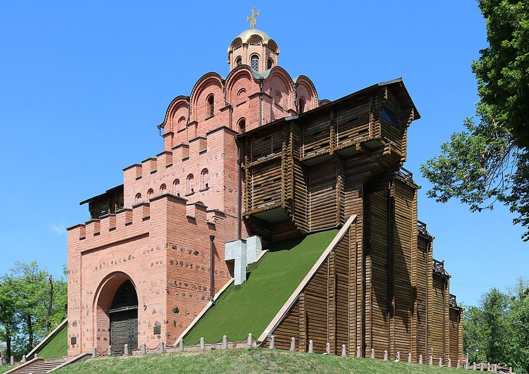

Kyiv¶
In the 1380s [Historical record]¶
Kyiv, the mother city of the Rus‘, was sacked by the Mongols in 1240, after which its princes only nominally controlled it. Gediminas’s army took it in the 1320s (a traditional date); Algirdas incorporated it into the Grand Duchy in 1362 after the Battle of Blue Waters (1362 or 1363, historians debate), and Vladimir Olgerdovich, Algirdas’s son, ruled from the castle on Zamkova hill until 1394, when Vytautas removed him. Skirgaila governed Kyiv from 1395 and died there on 11 January 1397. After the defeat on the Vorskla (12 Aug 1399) the Tatars besieged Kyiv, which paid a ransom, and raided as far as Lutsk. The Caves Monastery and St Sophia remained the city’s great churches; the town core had moved to the lower Podil. Kyiv stayed a Lithuanian principality until abolished in 1470. Sources: VLE; en.wikipedia (Kyiv, Skirgaila, Battle of the Vorskla River).
Kyiv

Kyiv · place — Image: George Chernilevsky, Public domain via Wikimedia Commons¶

Tipas |
vietovė |
Pastaba |
Historic metropolis on the Dnieper; southern seat of Skirgaila and later Lithuanian regents. |
Sensory sketch¶
Gold domes dulled by weather above a hill-city of ruins and gardens, with the wide Dnieper below: timber lanes in the riverside Podil, Orthodox chant from the cave monastery, the smell of beeswax, incense, fish, smoke and damp earth. In winter the river is ice, wolves come near the walls, and the cold gets into the stone of St Sophia. In summer the road south is dust and flies; steppe wind carries the smell of hay and horse.
Sagoje¶
Book II’s Kijevo šešėliai: the Steppe-Hunger’s door. A half-ruined capital whose ruins make a lord feel like a guest in his own house. Skirgaila is Henė’s discarded tool, and his death on 11 January 1397 is the collection of the bargain. Book II ch. 28 returns after Vorskla to the Pechersk Monastery and the city that paid its ransom.
Getting there¶
From Vilnius 590 km straight, 750-800 km by road: three to four weeks on horse, the last leg by the Dnieper. From Vorskla about 300 km south-east (twelve to twenty days for an army), from Lutsk about 380 km, from Smolensk about 480 km. The Dnieper is the road south, though the rapids below the city block simple through-traffic to the Black Sea.
Scenes set here¶
Book II ch. 13 Kijevo šešėliai (1394-95), ch. 15 Benamis chanas (1395-96), ch. 16 Skirgailos pabaiga (11 Jan 1397), ch. 22 Geležinis maršas (July 1399), ch. 28 Kijevo išpirka (the Pechersk monastery); Book III ch. 2 (1400); Book IV ch. 11 (Black Sea forts), ch. 17; Book VI ch. 20 (Blue Waters, 1362).
Ryšiai
Events here: Skirgaila dies in Kyiv
Chronologija¶
Year |
Event |
Book |
|---|---|---|
1397 |
II · Auksinis Šešėlis |
Sąsajos¶
graph LR
ev_skirgaila_dies["Skirgaila dies in Kyiv"]
kyiv["Kyiv"]
ev_skirgaila_dies -->|Location| kyiv
style kyiv stroke-width:3px